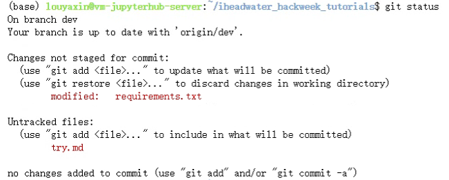
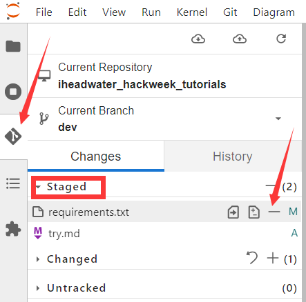

使用Git命令进行版本控制#
通过前面两部分的学习，相信大家已经学会了如何fork GitHub 仓库以复制其他用户的仓库，也掌握了如何下载 GitHub 仓库的副本（即克隆）到本地电脑上。那么在这一节，我们将学习使用 git 来实现版本控制的三个重要步骤。如下所示：
git add对已更改的文件进行版本控制跟踪git commit改变文件来创建本地版本库的唯一快照git push这些改变的文件，从本地仓库的副本到云端（GitHub.com）。
1. git status 检查更改的状态#
首先，我们需要了解到的是，git内部主要有 untracked,modified,staged和committed四种状态。在开始工作之前，我们先克隆一个远程GitHub仓库到本地。用终端导航到实践git的地方$ cd iheadwater_hackweek_tutorials，也可以进入这个文件夹之后再打开终端，之后我们来看一下不同的状态吧。
untracked，可以理解为没有记录，没有跟踪的意思，我们新创建一个try.md文件，它其实就是这个状态，没有经过任何改动。
modified，即修改过，我们可以随便修改一个已经存在的文件，写入一些文字或者进行修改，可以输入git status查看一下，就可以看到modified的提示。

staged，可以大概理解为暂存的状态，我们修改完文件之后，输入git add .命令就可以把改动添加到暂存区。注意在所有的改动都暂存的情况下，git status是不会出现红色的提示的，只会有绿色的提示信息。
committed，即已提交，我们输入git commit命令就是将对文件的修改进行提交。
git status
我们先来看看如何用git来跟踪这个文件的变化:
先用
git add把改动添加到跟踪区（暂存区）git commit对版本控制的更改
以上两条命令构成了许多使用git进行版本控制的工作流程的主体，可以简单解释如下，具体操作我们可以参考后面的部分。
git add：在工作目录中获取一个修改过的文件，并将修改后的版本放在一个暂存区供审查。
git commit：从暂存区获取所有内容，并为仓库的当前状态制作一个具有唯一标识符的永久快照。
补充：除了在终端里使用git status命令来查看文件的状态之外，我们还可以使用如图的方式来查看，也可以将文件的状态“后退”(“-”即可)、“添加”(“+”)。大家可以自己操作一下来看看发生了什么变化。

接下来，我们再一起看看命令git add。
2. 使用git add添加已更改的文件#
在我们进行修改后，可以将单个文件或文件组添加到版本控制跟踪中。那么要如何添加单个文件，可以运行以下命令：
git add file-name.extension
举个简单的例子，如果想要添加README.md文件，可以使用：
git add README.md
我们也可以同时添加所有编辑过的文件，使用：
git add -A
3. 用git commit提交修改过的文件#
如果我们想要将文件从暂存区移出，就可以运行git commit。通常git commit 命令后面还需要添加一个提交信息，用来描述我们在该次提交中所做的改动。这样的话就能更好地进行多人协作的工作，同时也可以：
帮助合作者和未来的自己了解哪些地方被修改了，为什么。
让我们和合作者能够找到（必要时撤销）之前所做的修改。
如果没有提交大量的修改时，可以使用 -m 标志创建一个简短的单行提交信息，如下所示。
git commit -m "Update title and author name in homework for week 3"
每个提交都有一个唯一的标识符（SHA-1哈希值），并包括提交时对暂存区文件的所有修改（即用git add添加到暂存区的所有文件）
4. 推送修改后的文件到 GitHub#
到目前的操作为止，我们只是修改了仓库的本地副本并完成了对仓库的本地提交。如果我们想要更新 GitHub.com 上的文件，则还需要把修改的文件push(推送) 到 GitHub.com 上的仓库。
这时就可以用以下命令把改动推送到 GitHub:
git push origin main
补充： main是远程的（主）分支。在具体的操作前，我们可以先通过一张图来简单地了解一下分支的概念。我们可以将分支简单地理解成一条平行直线，每个分支都能够进行版本控制，并且团队协作中的每个人都可以创建一个属于自己的分支，然后在自己的分支上进行修改等事宜。这样就把我们的工作从开发主线上分离开来，避免了影响开发主线。版本控制还允许我们将分支进行融合等操作。

下面我们就创建一个分支，并将分支推送到远程仓库（分支）下
4.1 创建分支并推送到远程分支#
首先，输入以下命令查看当前分支：
git branch
出现*表示当前处在该分支下
下一步，再新建一个本地分支：
git checkout -b <你的分支名称>
比如常见的新建一个“开发”分支：git checkout -b dev
虽然我们已经建立了分支，但可以看到 * 并没有出现在dev上面，这时我们可以输入：
git checkout dev
即可切换到dev分支上。通过以上操作，我们可以清楚地认识到命令git checkout是用于切换分支的。
下一步，我们需要把新建的本地分支push到远程服务器，远程分支与本地分支同名（当然可以随意起名）：
git push origin <你的分支名称>:<你的分支名称>
最后，我们来使用命令git branch -a查看一下所有分支，此时就会看到remotes/origin/<你的分支名称> 这个远程分支，这就说明新建远程分支成功。
4.2 拉取远程分支#
首先，我们查看一下远程分支：
git branch -r
然后，我们来看一下拉取远程分支的方式。
git checkout -b 本地分支名x origin/远程分支名x
需要注意的是，使用该方式会在本地新建分支 x ，并自动切换到该本地分支 x 。采用此种方法建立的本地分支会和远程分支建立映射关系。
当我们在 dev 分支完成了自己的部分时，主分支并不会发生变化，这个时候就需要把我们的代码合并到主分支 main 上来，执行git merge命令就可以合并分支。
需注意，合并分为两步！！！
切换到 main 分支，如果你已经在了就不用切换了;
执行
git merge dev，意思就是把 dev 分支的代码合并过来，不出意外，这个时候 dev分支的代码就顺利合并到 main 分支来了。
有添加就有删除，假如分支新建错了，或者dev分支的代码已经顺利合并到 main 分支来了，那么 dev 分支没用了，我们可以用 git branch -d 删除。删除分支dev 的语句为 git branch -d dev 。
关于分支的更多内容，这里有一个git分支交互式学习的网站，可以试试：https://learngitbranching.js.org/
4.3 fork后同步源仓库新更新的内容#
在我们fork了其他人的repo后，如果他们的内容有更新，我们又应该怎样把他们的最新内容同步过来呢？
首先，我们需要先查看远程状态:
git remote -v
接着确定一个将被同步给 fork 远程的上游仓库:
git remote add upstream git@github.com:iHeadWater/iheadwater_hackweek_tutorials.git
然后再次查看远程状态，已经可以看到upstream的信息了。
随后从上游仓库 fetch 分支：
git fetch upstream
转换到main(或者master)分支
git checkout main
最后就是合并远程分支：
git merge upstream/main
# 或者
git rebase upstream/main
如果本地没有更改，那git就直接自动执行一个fast-forward，如果有更改，就手动调整一下有冲突的地方，然后commit即可。
最后push到自己的origin上即可。
git push
4.4 查看历史版本#
我们可以使用以下的命令：
git log
来查看历史提交记录。
同时，如果使用
git checkout xxx（某个历史版本的哈希值，即git log下显示的每次commit对应的一串数字字母）
即可回到xxx的那个版本。
5. 从GitHub.com上拉出修改过的文件到克隆Repo上#
当我们运行git clone时，会将 git repo的完整副本从github.com复制到本地计算机。它包括所有的.git历史信息，我们需要这些信息来跟踪repo的变化。因此我们只需要运行一次git clone。运行完git clone后，就可以用git pull来更新 repo。
注意：git add、git commit和git push是将本地的修改推送到远程，而git pull是从远程库中获取某个分支的更新，再与本地指定的分支进行自动merge。
首先，查看我们处于哪个分支，因为我们可能会有许多分支，但是只需对特定分支进行更新。
git branch
再查看一下远程分支：
git branch -r
运行git pull
git pull <远程库名> <远程分支名>:<本地分支名>
举个例子，如果我们想要取回远程库中的dev分支，并与本地的dev分支进行merge，就可以写成：
git pull origin dev:dev
如果是要与本地当前分支merge，则直接git pull即可。
通常，git会将本地库分支与远程分支之间建立一种追踪关系。比如，在git clone的时候，所有本地分支默认与远程库的同名分支建立追踪关系。也就是说，本地的main分支自动追踪origin/main分支。因此，如果当前处于本地dev分支上，并且本地dev分支与远程的dev分支有追踪关系，那么分支名可以省略：
git pull
6. 用.gitignore文件告诉 Git 忽略文件#
有时我们不想在git repo中有些文件被追踪到。例如：
_DS_STORE or
.ipynb checkpoint files.
其他时候，如果我们仓库里有敏感的文件，永远不想用git来追踪，比如API凭证或其他包含个人信息的文件。这个时候我们就可以把任何文件类型或名称添加到.gitignore文件中，这样git就不会追踪它们。这意味着，当运行git add或git status时，它将不会追踪任何列在.gitignore文件中的文件。因此，这些文件将永远不会被添加到 GitHub.com 上。
我们看一个简单的例子，假设有一个名为 social-security.txt 的文件，其中包含敏感信息。我们可以将该文件添加到一个 .gitignore文件中。如果仓库中还没有 .gitignore文件，可以用文本手动创建，或者使用下面的bash命令。
在文本编辑器中打开这个.gitignore文件，添加git忽略的文件名（不需要其他信息），比如说:social-security.txt
任何列在.gitignore文件中的文件都会被git忽略。另外我们也可以通过在gitignore文件中添加目录名称来告诉git忽略目录（比如忽略一个名为private-directory的目录）